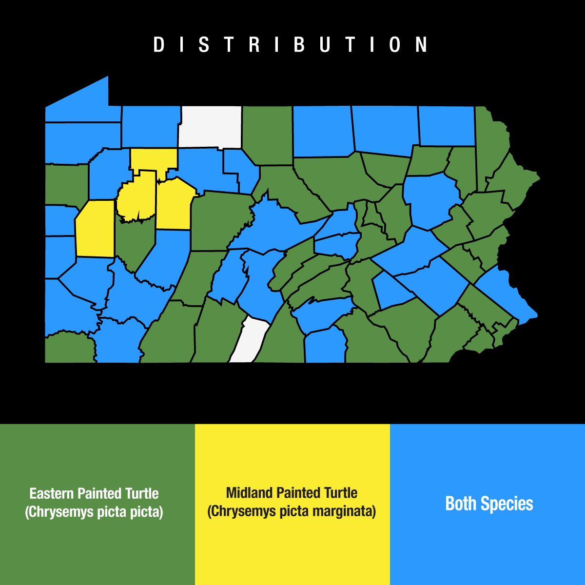
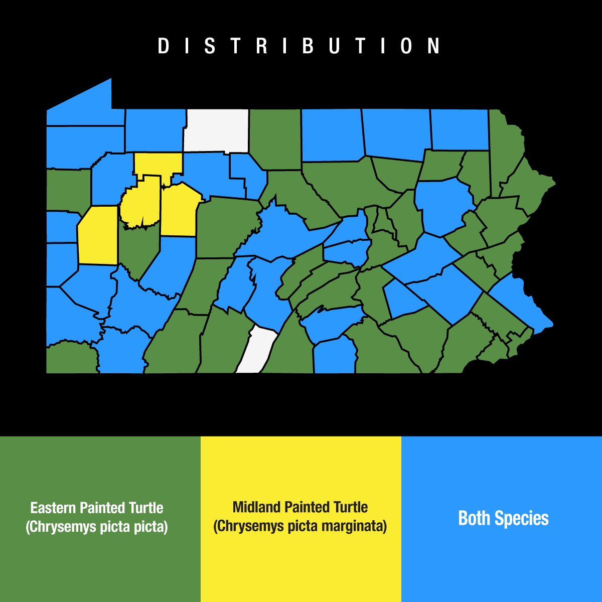
Painted Turtle
Chrysemys picta (Eastern) & Chrysemys marginata (Midland)
Size:4.5-8 inches (10-18 cm) in length
Status:Abundant
Habitat:
Slow-moving fresh waters. Most frequently observed basking on rocks and logs.
Description:
The adult painted turtle female is 10–25 cm (4–10 in) long; the male is smaller. The turtle's top shell is dark and smooth, without a ridge. Its skin is olive to black with red, orange, or yellow stripes on its extremities. The subspecies can be distinguished
by their shells: the eastern has straight-aligned top shell segments while the midland has a large gray mark on the bottom shell.
Additional Info:
The painted turtle is the most widespread native turtle of North America. It lives in slow-moving fresh waters, from southern Canada to Louisiana and northern Mexico, and from the Atlantic to the Pacific. The turtle is the only species of the genus Chrysemys,
which is part of the pond turtle family Emydidae. Fossils show that the painted turtle existed 15 million years ago. Four regionally based subspecies (the eastern, midland, southern, and western) evolved during the last ice age.
PHOTO BY GREG SCHECHTER DISTRIBUTION INFORMATION FROM: PAHERPSURVEY.ORG & PAHERPS.COM ADDITIONAL INFORMATION FROM: WIKIPEDIA
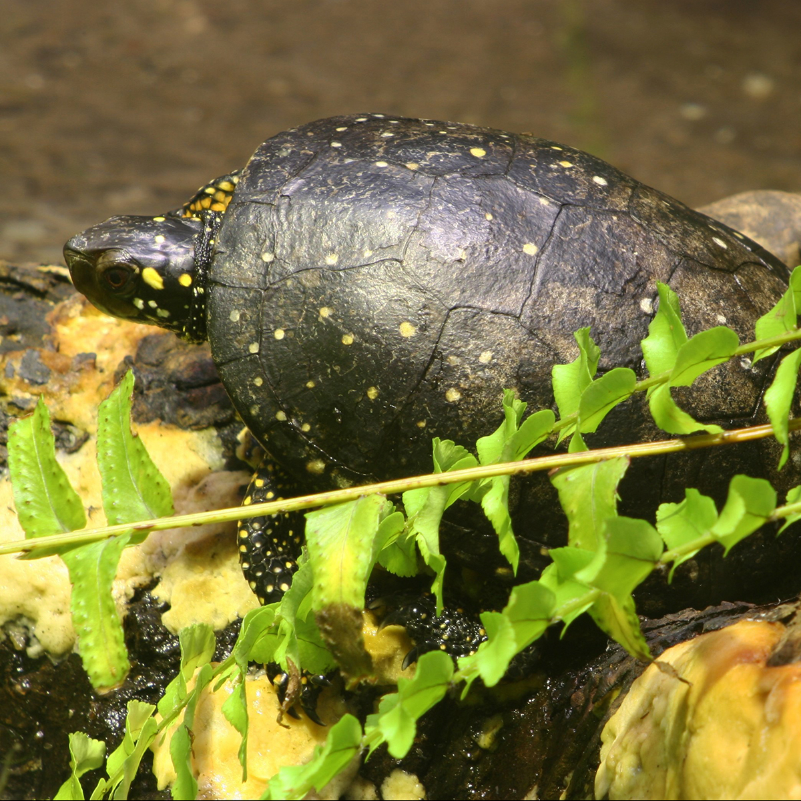

SPOTTED TURTLE
Clemmys guttata
Size:
7.5-10.8 inches (9-27.3 cm) in length
Status:
Species of special concern
Habitat:
Marshes, wet meadows, swamps, bogs, and shallow borders of ponds, lakes and streams.
Description:
The spotted turtle is small and has a gray to black base color. Its upper shell is smooth, does not have a central ridge running down the middle. It is also totally black and contains anywhere from zero to about one hundred yellow spots, which are a defining
characteristic of this turtle. The head is black and the upper jaw is notched. On each side of the head is a large orange blotch. Hatchlings resemble the adults closely. Consistently, each segment of the upper shell has only one yellow spot.
Additional Info:
Although perhaps inconsequential, it has been found that the left side of the upper shell has more spots than the right. Also, females have more spots than males (on average). The spots on spotted turtles vary greatly throughout their range. They can
have up to a hundred spots, while some have no spots at all. The spotted turtle is one species whose sex is determined by temperature during embryonic development. Some researchers have claimed that global warming may deleteriously impact population
sex ratios. Spotted turtles shed their scutes in small pieces occasionally resulting in completely smooth shelled specimens. These are very intelligent turtles and have been tested like the Wood Turtles in mazes and have been proven to have
the brain capacity of a mouse. These turtles are only active in the cooler spring months. The spotted turtle is declining throughout eastern Northern America due to habitat loss and poaching.
PHOTO BY DAVE PAPE DISTRIBUTION INFORMATION FROM PAHERPSURVEY.ORG & PAHERPS.COM ADDITIONAL INFORMATION FROM WIKIPEDIA
 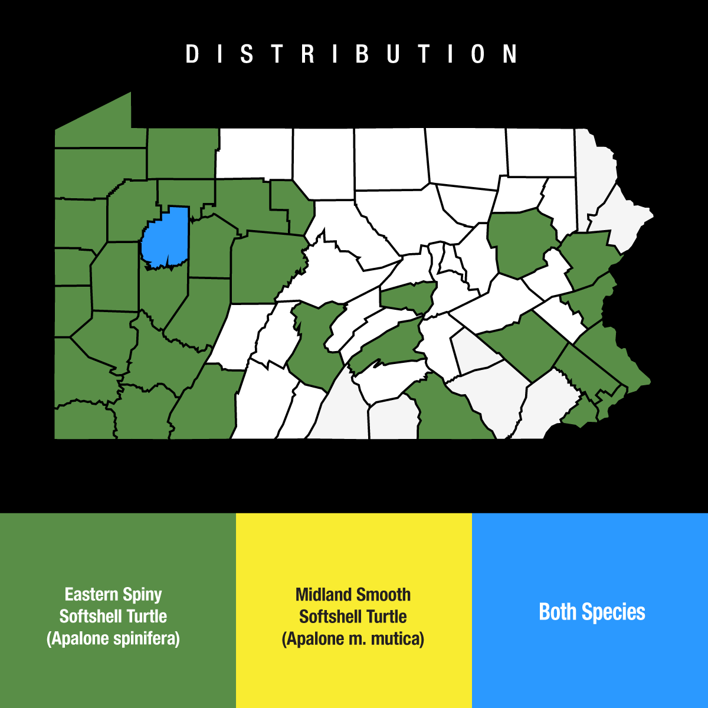
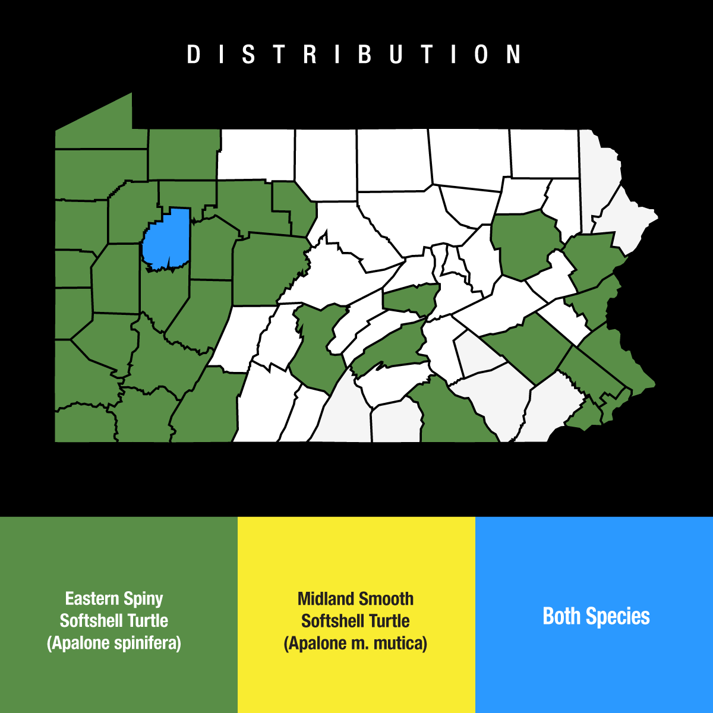
SOFTSHELL TURTLE
Apalone spinifera
Size:
7-17 inches (18-43.2 cm)
Status:
Species of special concern
Habitat:
Large rivers and lakes to small ponds and slow-moving creeks with a sandy or muddy bottom.
Description:
One of the largest freshwater turtle species in North America. Both the common name, spiny softshell, and the specific name, spinifera (spine-bearing), refer to the spiny, cone-like projections on the leading edge of the carapace, which are not scutes
(scales). Female Spiny Softshell Turtles grow larger than the males of the species.
Additional Info:
Although the Midland Smooth Softshell turtle (Apalone m. mutica) is listed in the map above, only two specimens have ever been found in PA. Spiny softshells begin mating between ages 8 and 10. A large female turtle may live up to 50 years. The turtles
mate in mid-to-late spring in deep water. The male will nudge the female's head while swimming, and if she chooses to mate, the male will swim above the female without clasping her with his claws (unlike other turtles). A few months later, the
female turtle quickly lays her eggs along a sunny sandbar or gravel bank in a flask-shaped cavity she has dug close to the water. The turtle nests more than once during a single season. She can lay between 9 and 38 round, calcareous-shelled
eggs. The eggs are laid around August and September, and they hatch in the spring. Unlike in other turtles, in the spiny softshell turtle, the sex of the hatchlings is not determined by temperature variations; it is determined by genetics.
PHOTO BY KIM PARDI DISTRIBUTION INFORMATION FROM PAHERPSURVEY.ORG & PAHERPS.COM ADDITIONAL INFORMATION FROM WIKIPEDIA
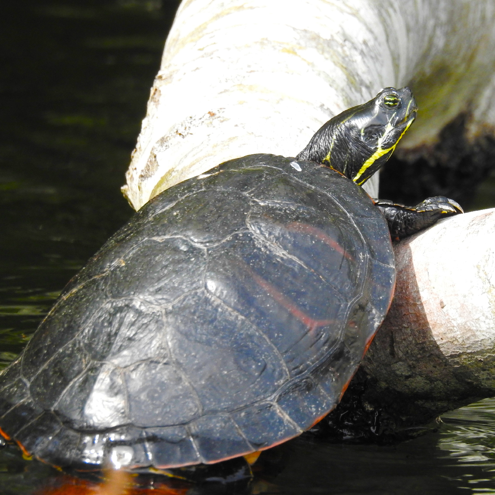

Northern Redbelly Cooter
Pseudemys rubriventris rubriventris
Size:
10-12.5 inches (25.4-32 cm) in length
Status:
Threatened Species
Habitat:
Large lakes, ponds, slow-moving rivers, creeks and marshes.
Description:
Large aquatic species. The upper shell is brown or black and usually has red and black markings with a spot in the center. The underside varies from pink to red. The head, neck, legs and tail have yellow stripes. The shell is smooth with slight notching
above the tail.
Additional Info:
The potential threats to red-bellied turtle populations are numerous. For example: wetland loss, habitat fragmentation, pollution, collecting of turtles for pets, food or other trophies, competition with the invasive red-eared slider turtle for food,
habitat, basking sites or nesting sites, and the potential for hybridization with red-eared slider turtles.
PHOTO BY JERE7MY DISTRIBUTION INFORMATION FROM PAHERPSURVEY.ORG & PAHERPS.COM ADDITIONAL INFORMATION FROM WIKIPEDIA
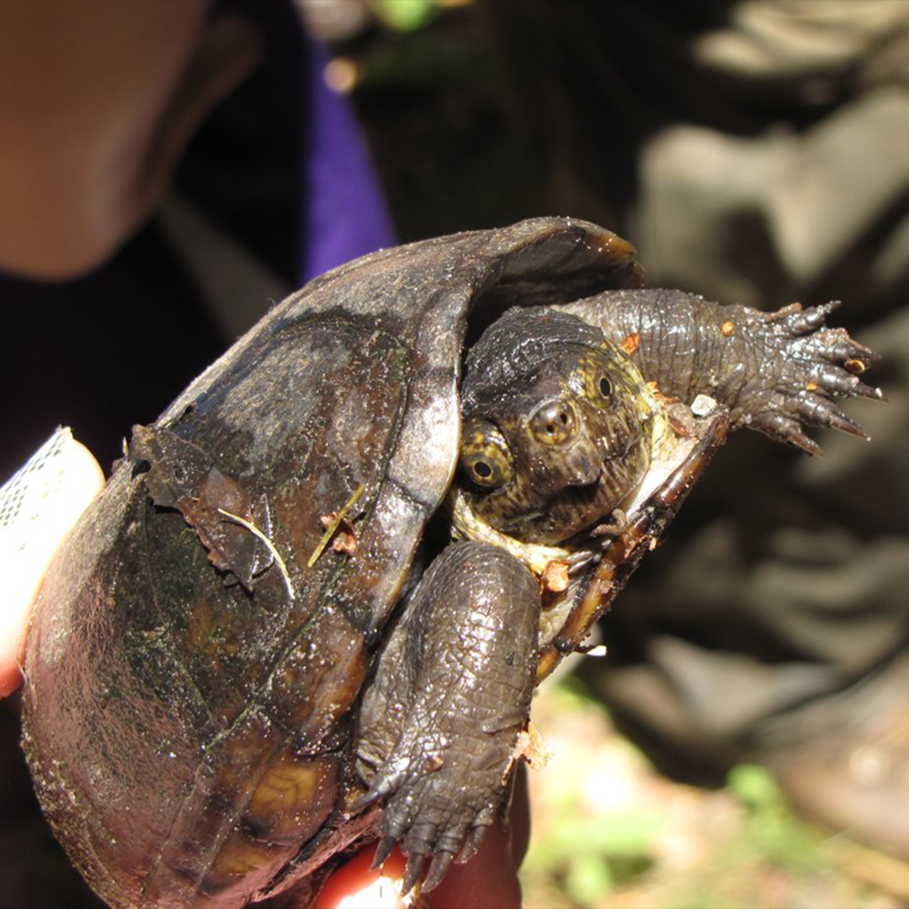
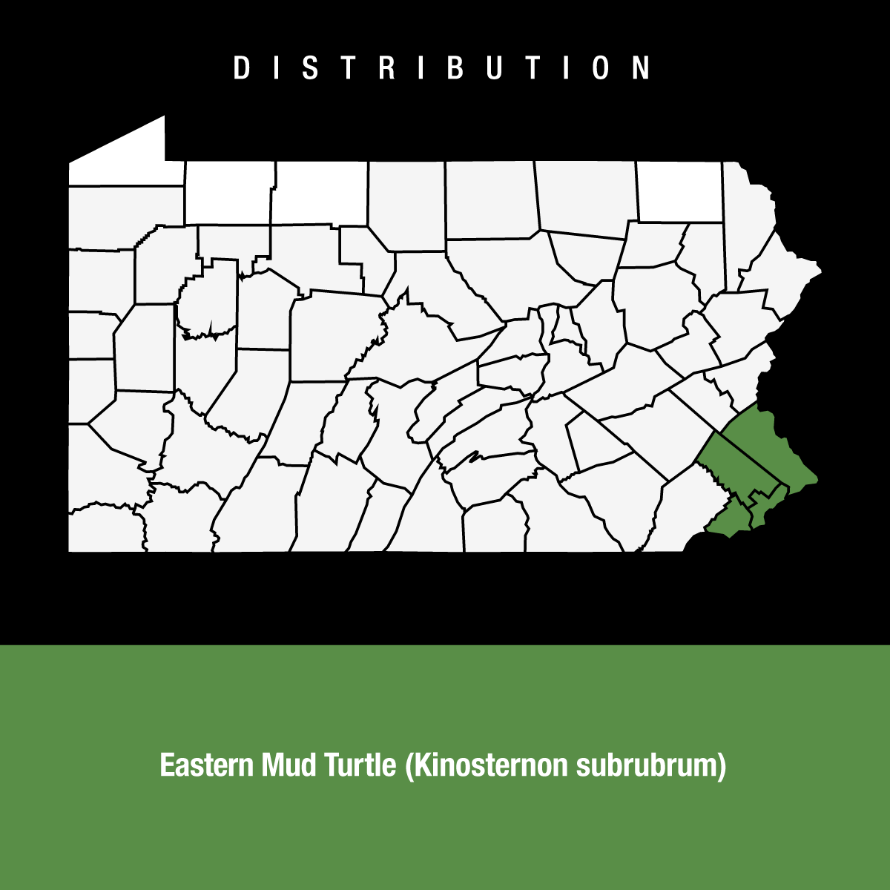
MUD TURTLE
Kinosternon subrubrum
Size:
3-5 inches (7-10 cm) in length
Status:
Species of special concern
Habitat:
Eastern mud turtles live in ponds and other freshwater habitats.
Description:
The eastern mud turtle is a small and often hard to identify species. The carapace is keelless, lacks any pattern, and varies in color from yellowish to black. The plastron is large and double hinged, and can be yellowish to brown, and may sometimes have
a dark pattern. The chin and throat are a yellowish grey, streaked and mottled with brown, while the limbs and tail are grayish. The eye, or iris, of the eastern mud turtle is yellow with dark clouding, and its feet are webbed.
Additional Info:
Mud turtles feed mainly on insects and small fish. Raccoons are known to eat this species' eggs, while herons and alligators often hunt the adults. This species is also exploited to the pet trade
PHOTO BY U.S. FISH AND WILDLIFE SERVICE HEADQUARTERS DISTRIBUTION INFORMATION FROM PAHERPSURVEY.ORG & PAHERPS.COM ADDITIONAL INFORMATION FROM WIKIPEDIA
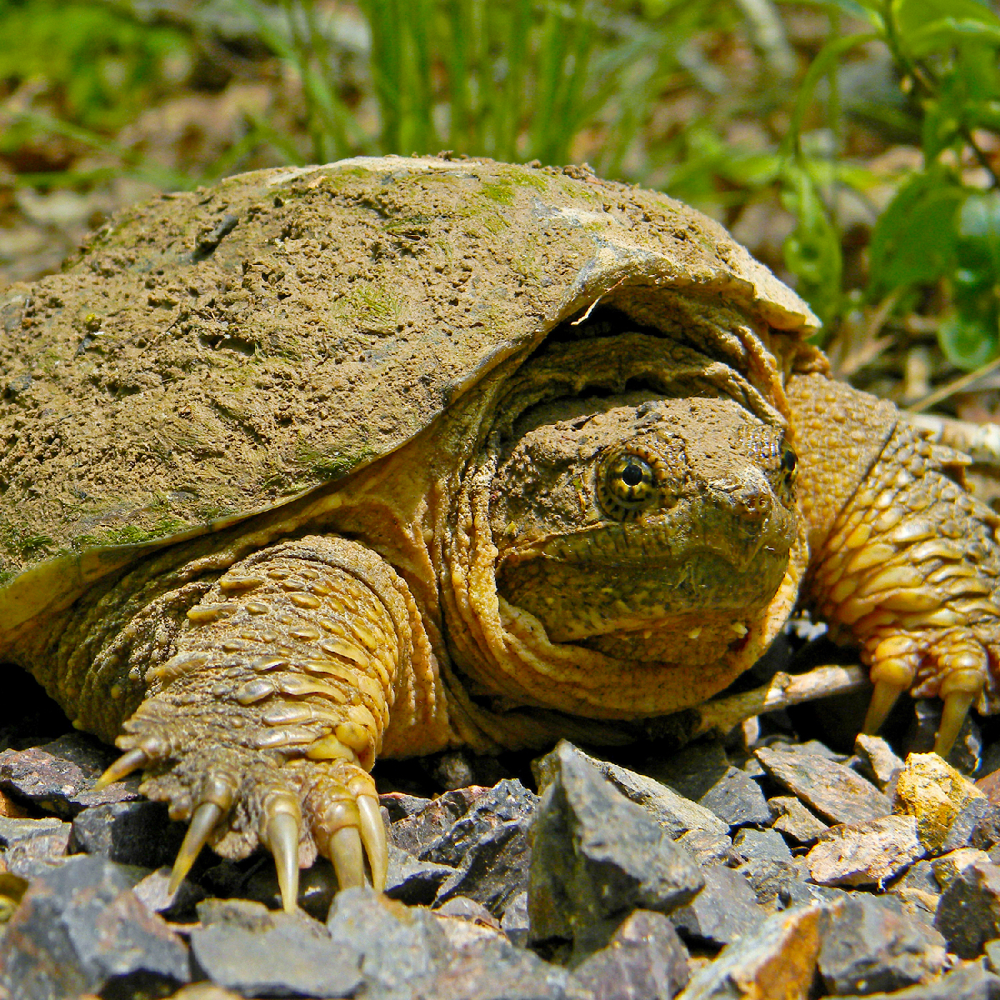
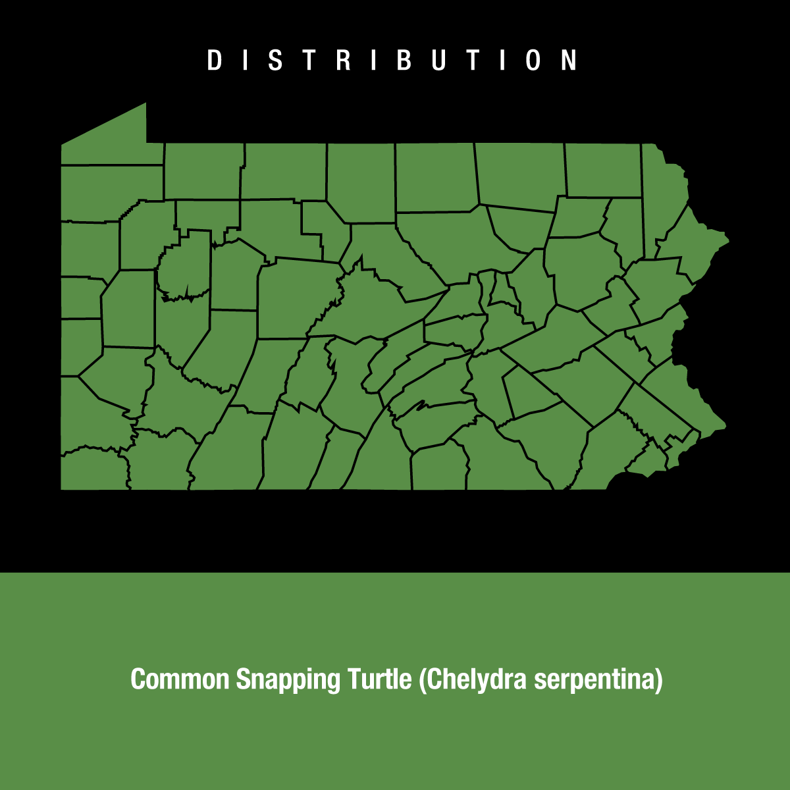
COMMON SNAPPING TURTLE
Chelydra serpentina
Size:
8-18.5 inches (20-47 cm) in length
Status:
Abundant
Habitat:
Common habitats are shallow ponds or streams. Some may inhabit brackish environments, such as estuaries. Common snapping turtles sometimes bask—though rarely observed—by floating on the surface with only their carapaces exposed, though in the northern
parts of their range, they also readily bask on fallen logs in early spring.
Description:
The common snapping turtle has a rugged, muscular build with ridged carapaces (though ridges tend to be more pronounced in younger individuals). The upper shell length in adulthood may be nearly 50 cm (20 in), though 25–47 cm (9.8–18.5 in), is more common.
C. serpentina usually weighs 4.5–16 kg (9.9–35.3 lb). Per one study, breeding common snapping turtles were found to average 28.5 cm (11.2 in) in carapace length, 22.5 cm (8.9 in) in plastron length and weigh about 6 kg (13 lb). Males are larger
than females, with almost all animals weighing in excess of 10 kg (22 lb) being male and quite old, as the species continues to grow throughout life.
Additional Info:
In their environment, they are at the top of the food chain, causing them to feel less fear or aggression. When they encounter a species unfamiliar to them such as humans, in rare instances, they will become curious and survey the situation and even more
rarely may bump their nose on a leg of the person standing in the water. Although snapping turtles have fierce dispositions, when they are encountered in the water or a swimmer approaches, they will slip quietly away from any disturbance or
may seek shelter under mud or grass nearby. Common snapping turtles are very aggressive if caught, and have a strong enough bite to easily cut off human fingers.
PHOTO BY Dakota L. DISTRIBUTION INFORMATION FROM PAHERPSURVEY.ORG & PAHERPS.COM ADDITIONAL INFORMATION FROM WIKIPEDIA
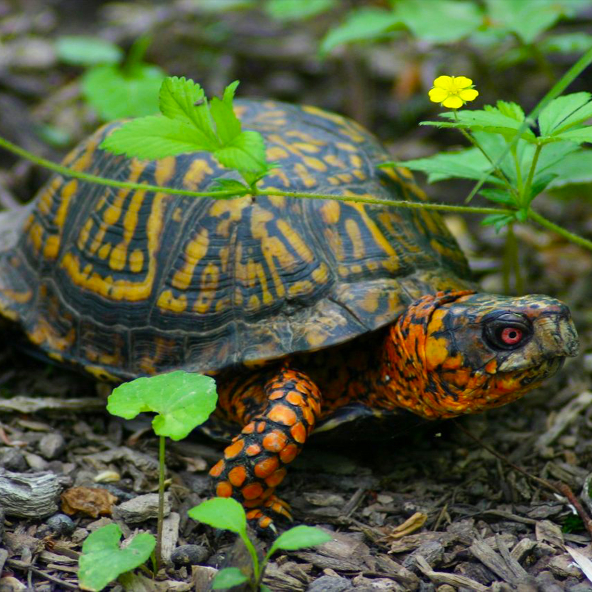
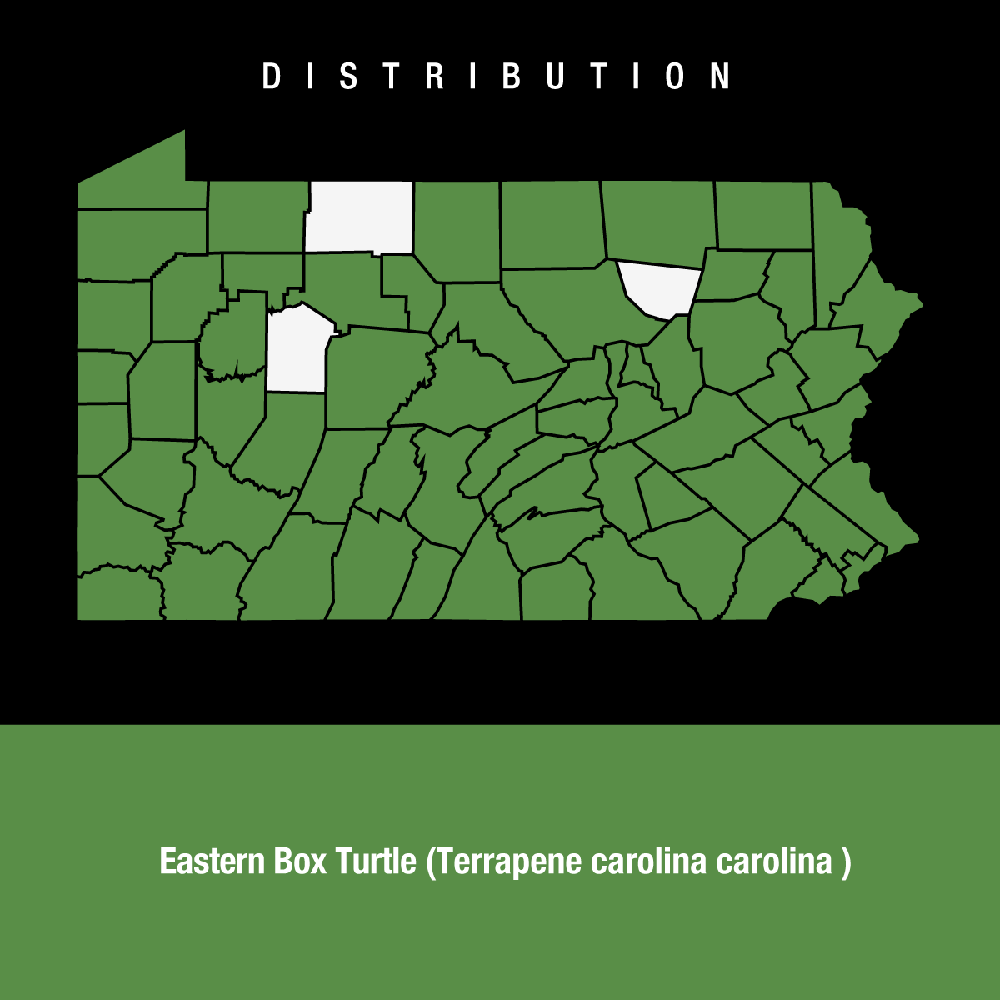
BOX TURTLE
Terrapene carolina carolina
Size:
5-8 inches (12.7-20 cm) in length
Status:
Species of special concern
Habitat:
Eastern box turtles prefer deciduous or mixed forested regions, with a moderately moist forest floor that has good drainage. Bottomland forest is preferred over hillsides and ridges. They can also be found in open grasslands, pastures, or under fallen
logs or in moist ground, usually moist leaves or wet dirt. They have also been known to take "baths" in shallow streams and ponds or puddles, and during hot periods may submerge in mud for days at a time.
Description:
Eastern box turtles have a high, dome-like carapace and a hinged plastron that allows total shell closure. The carapace can be of variable coloration, but is normally found brownish or black and is accompanied by a yellowish or orangish radiating pattern
of lines, spots or blotches. Skin coloration, like that of the shell, is variable, but is usually brown or black with some yellow, orange, red, or white spots or streaks. Furthermore, males normally possess red eyes (irises) whereas females
usually display brown eyes. Eastern box turtles feature a sharp, horned beak, stout limbs, and their feet are webbed only at the base. Eastern box turtles have 5 toes on each front leg, and normally 4 toes on each hind leg, although some individuals
may possess 3 toes on each hind leg.
Additional Info:
In the captivity, box turtles are known to live over 100 years, but in the wild, often live much shorter lives due to disease and predation.
PHOTO BY NO AUTHOR LISTED DISTRIBUTION INFORMATION FROM PAHERPSURVEY.ORG & PAHERPS.COM ADDITIONAL INFORMATION FROM WIKIPEDIA
 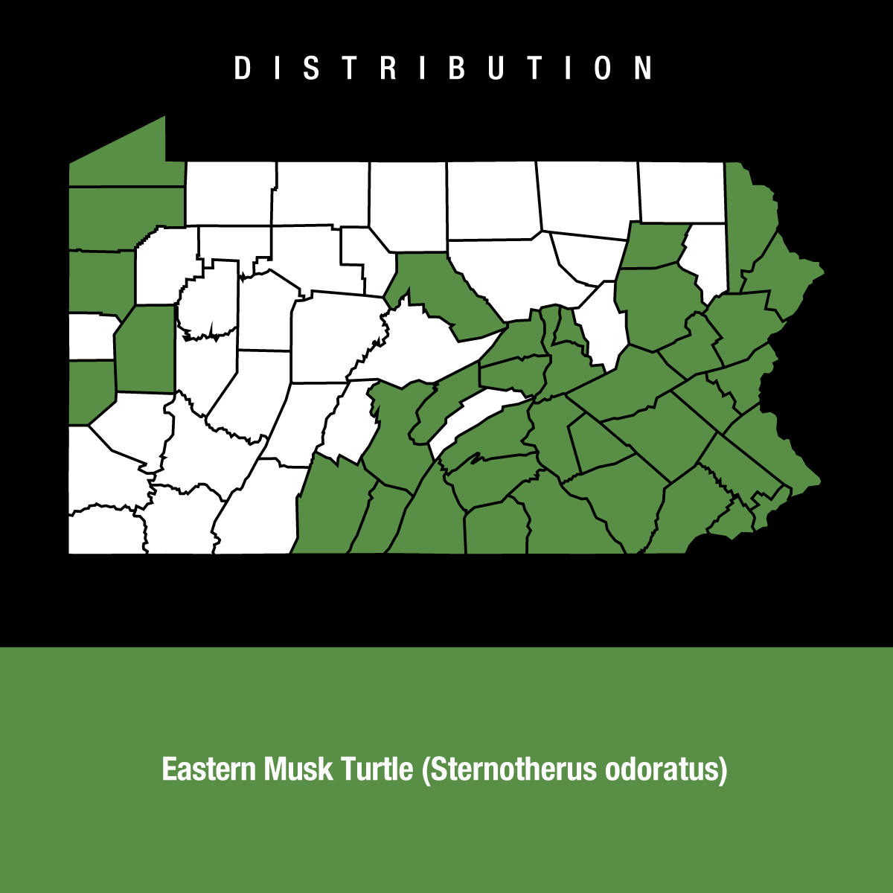
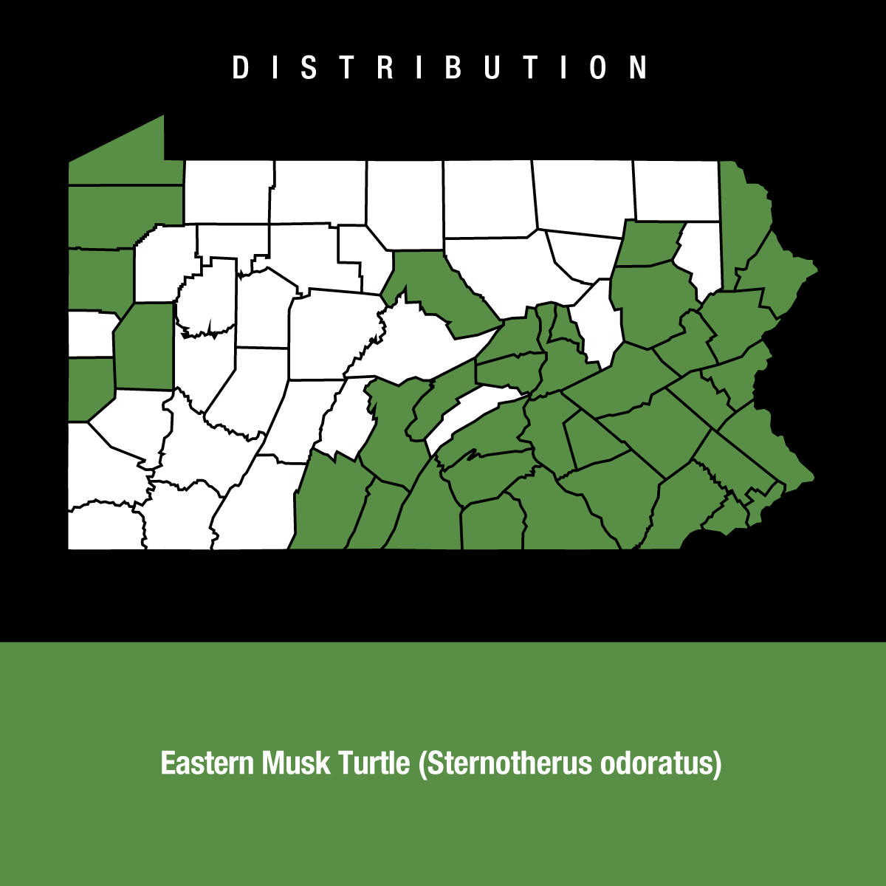
MUSK TURTLE
Sternotherus odoratus
Size:
2 - 5 inches (5.1 - 11.5 cm)
Status:
Abundant
Habitat:
This turtle is found in a variety of wetland habitats and littoral zones, particularly shallow watercourses with a slow current and muddy bottom. Although they are more aquatic than some turtles, they are also capable of climbing, and may be seen basking
on fallen trees and woody debris. Fallen trees and coarse woody debris are known to be important components of wetland habitat, and may be particularly beneficial to basking turtles.
Description:
Musk Turtles are small black, grey or brown turtles with highly domed shells. They have long necks and rather short legs. The yellow lines on the neck are a good field marker, and often can be seen from above in swimming turtles. Males can usually be
distinguished from females by their significantly longer tails and by the spike that protrudes at the end of the tail.
Additional Info:
The musk turtle is also known as the stinkpot due to its ability to release a foul musky odor from scent glands on the edge of its shell, possibly to deter predation. Their tiny tongues are covered in bud-like papillae that allow them to respire underwater.
Wild musk turtles often will not hesitate to bite if harassed. A musk turtle's neck can extend as far as its hind feet; caution is required when handling one.
PHOTO BY ONTLEY DISTRIBUTION INFORMATION FROM PAHERPSURVEY.ORG & PAHERPS.COM ADDITIONAL INFORMATION FROM WIKIPEDIA
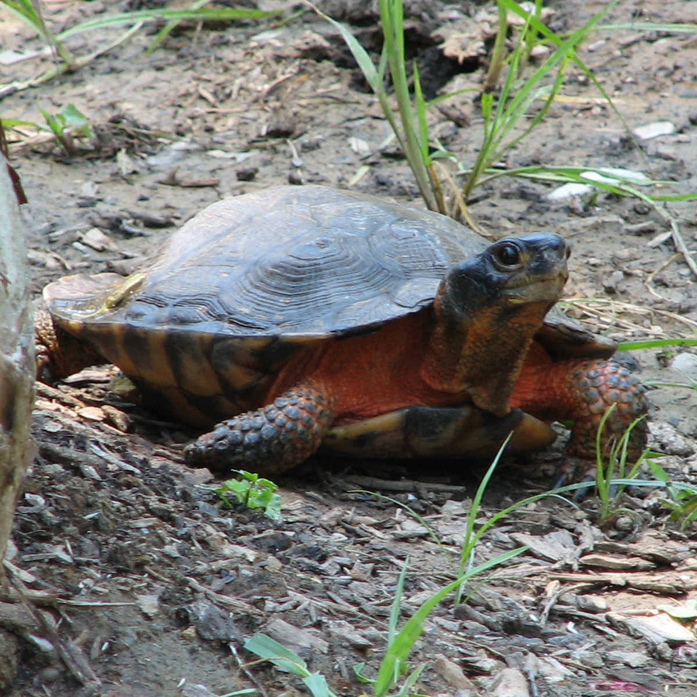
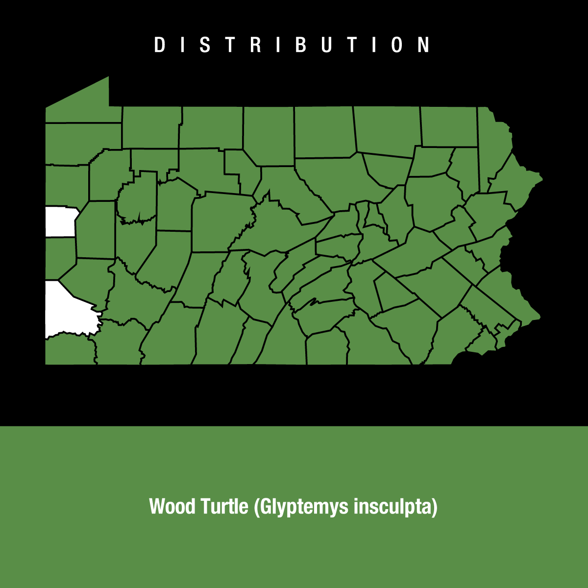
WOOD TURTLE
Glyptemys insculpta
Size:
5.5 to 7.9 inches (14 to 20 cm)
Status:
Species of special concern
Habitat:
Wood turtles spends a great deal of time in or near the water of wide rivers, preferring shallow, clear streams with compacted and sandy bottoms. The wood turtle can also be found in forests and grasslands, but will rarely be seen more than several hundred
meters from flowing water. It is diurnal and is not overtly territorial.
Description:
Morphologically, the wood turtle is similar to the bog turtle, spotted turtle, and Blanding's turtle.its defining characteristic being the pyramidal pattern on its upper shell. The wood turtle's plastron (ventral shell) is yellowish in color and has dark
patches. The posterior margin of the plastron terminates in a V-shaped notch. Although sometimes speckled with yellowish spots, the upper surface of the head is often a dark gray to solid black. The ventral surfaces of the neck, chin, and legs
are orange to red with faint yellow stripes along the lower jaw of some individuals. Seasonal variation in color vibrancy have been known to occur.
Additional Info:
The wood turtle is omnivorous and is capable of eating on land or in water. On an average day, a wood turtle will move 108 meters (354 ft), a decidedly long distance. Many other animals that live in its habitat pose a threat to it. Raccoons are over-abundant
in many places and are a direct threat to all life stages of this species. Inadvertently, humans cause a large number of deaths through habitat destruction, road traffic, farming accidents, and illegal collection. When unharmed, it can live
for up to 40 years in the wild and 58 years in captivity.
PHOTO BY TRISHA SHEARS DISTRIBUTION INFORMATION FROM PAHERPSURVEY.ORG & PAHERPS.COM ADDITIONAL INFORMATION FROM WIKIPEDIA
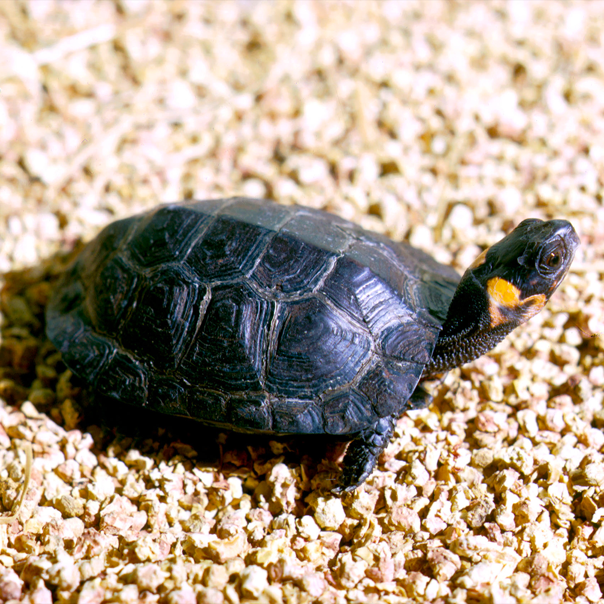
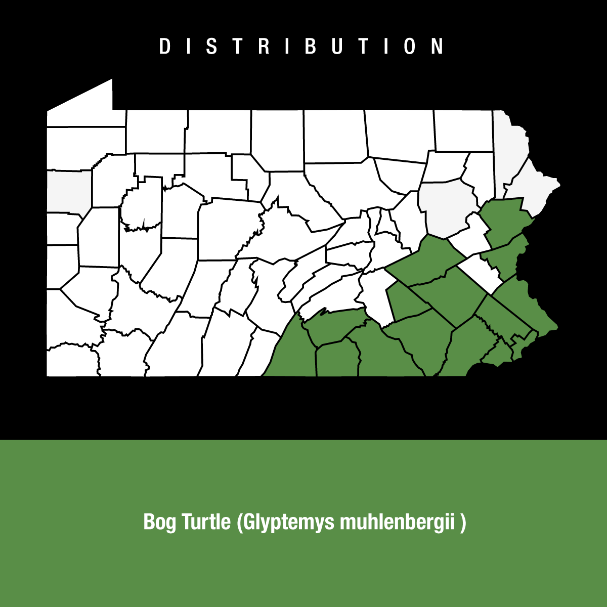
BOG TURTLE
Glyptemys muhlenbergii
Size:
4 inches (10 cm)
Status:
Endangered
Habitat:
Bog turtles prefer calcareous wetlands (areas containing lime), including meadows, bogs, marshes, and spring seeps, that have both wet and dry regions. Their habitat is often on the edge of woods. Bog turtles have sometimes been seen in cow pastures and
near beaver dams.
Description:
The bog turtle is the smallest species of turtle in North America. It does not have a prominent snout. Its head is dark brown to black; however, it has a bright yellow, orange, or red spot on each side of its neck. The bog turtle has a dark skin color
with an orange-red wash on the inside of the legs of some individuals. The carapace is domed and rectangular in shape, and it tends to be narrower toward the head and wider toward the tail.The carapace often has easily identifiable rings on
the rough scales or scutes.The scutes may also have a radiating arrangement of lines. In some older individuals, and those that burrow frequently in coarse substrates, the shell may be smooth.Although generally black, a chestnut sunburst pattern
in each scute is sometimes present on the carapace.The belly of the shell is also a dark brown to black color with light marks present.
Additional Info:
Protected under the United States Federal Endangered Species Act,the bog turtle is considered threatened in Connecticut, Delaware, Maryland, Massachusetts, New Jersey, New York and Pennsylvania as of November 4, 1997. The invasion of non-native plants
into its habitat is a large threat to the bog turtles' survival. Although several plants disrupt its ecosystem, the three primary culprits are purple loosestrife, reed canary grass, and reeds, which grow thick and tall and are believed to hinder
the movement of the turtles. Such plants also out-compete the native species in the bog turtle's habitat, thus reducing the amount of food and protection available to the turtles. The development of new neighborhoods and roadways obstructs the
bog turtle's movement between wetlands, thus inhibiting the establishment of new bog turtle colonies. Pesticides, runoff, and industrial discharge are all harmful to the bog turtles' habitat and food supply. The bog turtle has been designated
as a threatened species to "conserve the northern population of the bog turtle, which has seriously declined in the northeast United States. The bog turtle was noted in the 18th century by Gotthilf Heinrich Ernst Muhlenberg, a self-taught botanist
and clergyman. Muhlenberg, who named more than 150 North American plant species, was conducting a survey of the flora of Lancaster County, Pennsylvania, when he discovered the small turtle.
PHOTO BY R. G. TUCKER, JR./USFWS DISTRIBUTION INFORMATION FROM PAHERPSURVEY.ORG & PAHERPS.COM ADDITIONAL INFORMATION FROM WIKIPEDIA
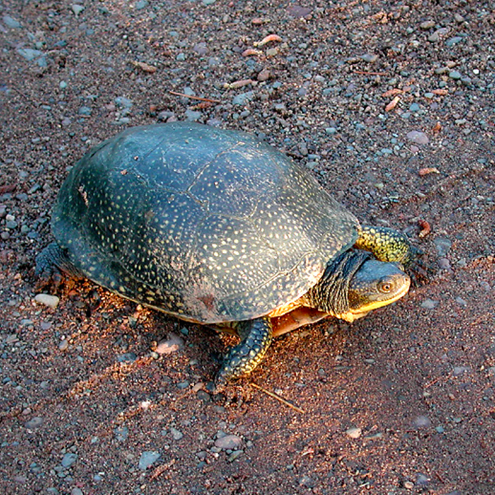
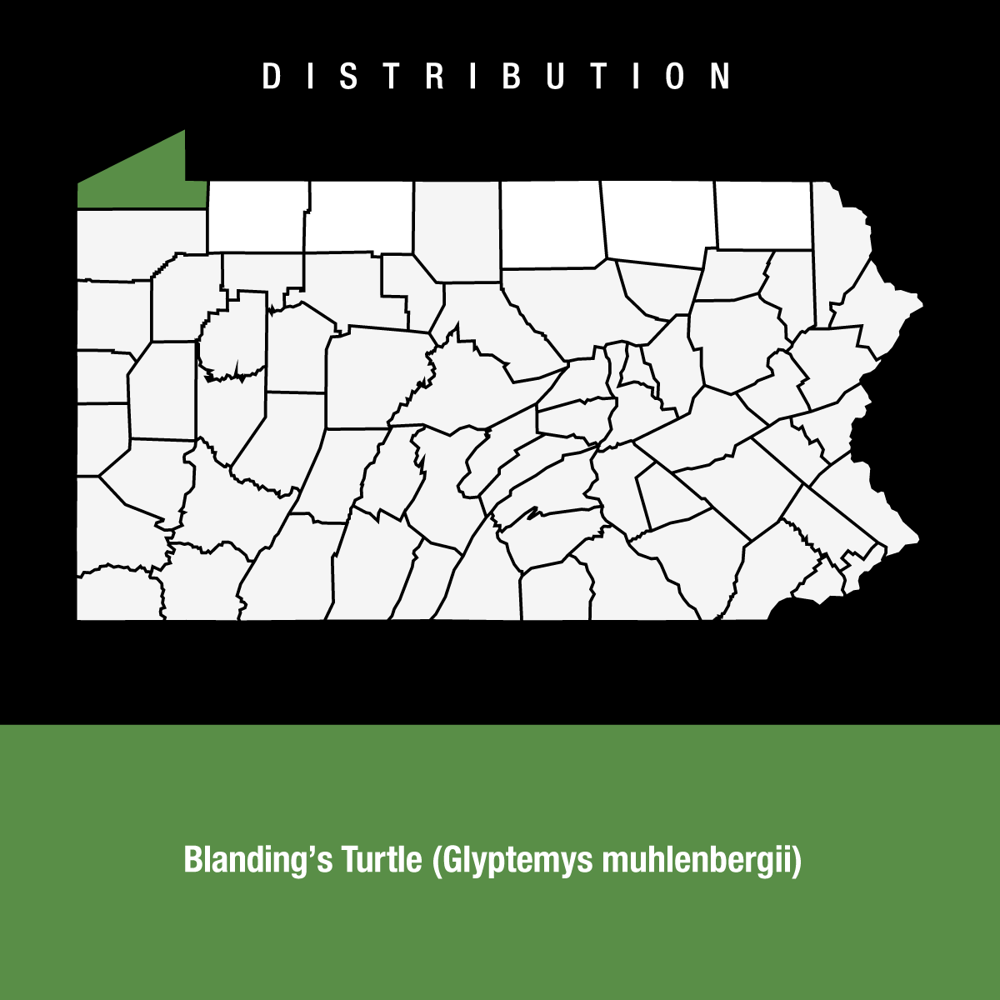
BLANDING'S TURTLE
Emydoidea blandingii
Size:
10.0 inches (25.5 cm)
Status:
Candidate for species of special concern
Habitat:
Poorly drained lowlands, marshes, wet meadows, ponds, and slow-moving streams
Description:
A distinguishing feature of this turtle is the bright yellow chin and throat. The carapace, or upper shell, is domed, but slightly flattened along the midline, and is oblong when viewed from above. The carapace is speckled with numerous yellow or light-colored
flecks or streaks on a dark background. The plastron, or lower shell, is yellow with dark blotches symmetrically arranged. The head and legs are dark, and usually speckled or mottled with yellow.
Additional Info:
Historically, the Blanding’s Turtle was found only in Erie and Crawford Counties in the northwest part of the state, but with the flooding of Pymatuning Swamp and development of towns in its range, the Blanding’s Turtle may no longer reside in Pennsylvania
at all. Breeding populations haven’t been documented in much of its historic range in over 100 years. Blanding's turtles do not appear to age once they have reached adulthood.
PHOTO BY RAPHAEL CARTER DISTRIBUTION INFORMATION FROM PAHERPSURVEY.ORG & PAHERPS.COM ADDITIONAL INFORMATION FROM WIKIPEDIA
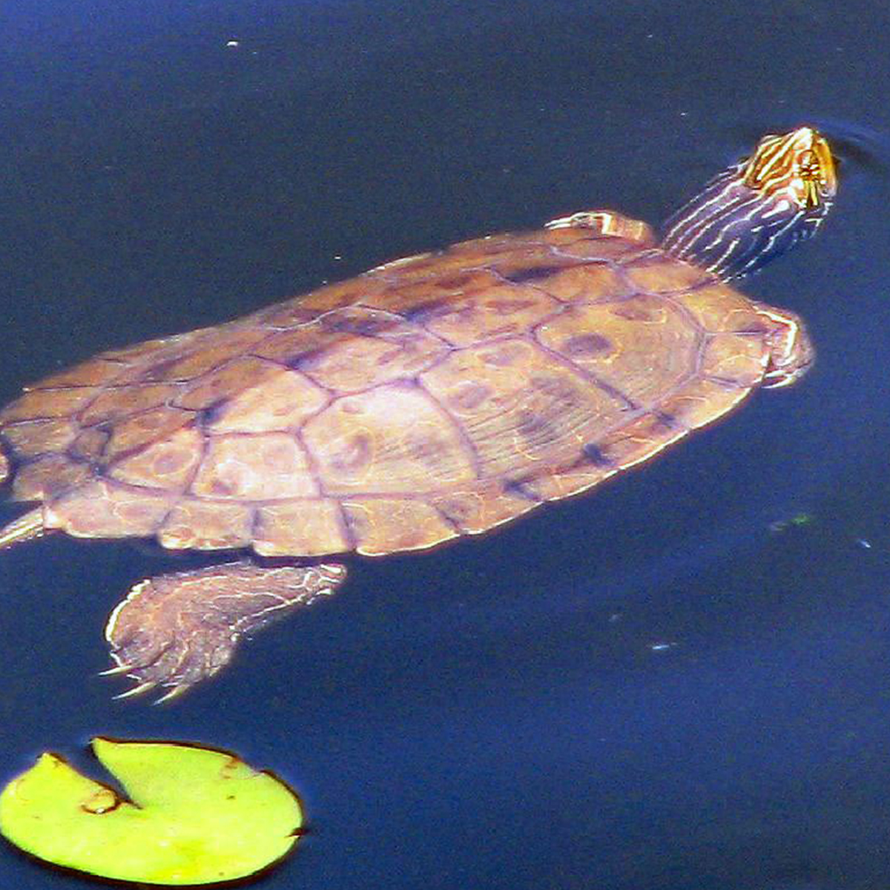
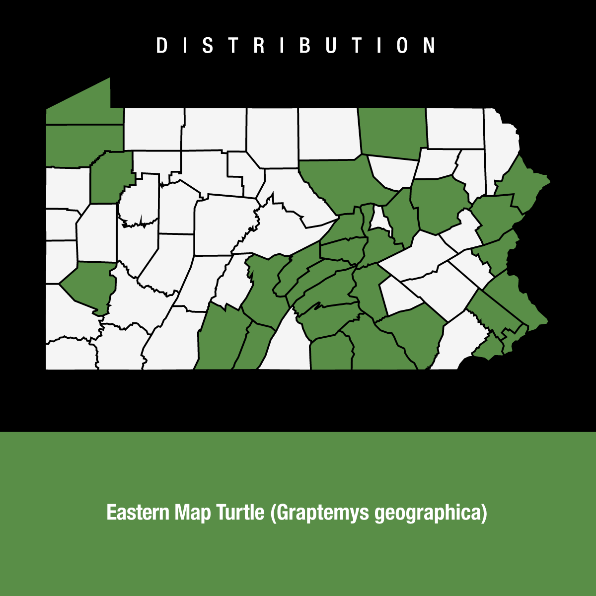
MAP TURTLE
Graptemys geographica
Size:
7.5-10.8 inches (9-27.3 cm) in length
Status:
Species of special concern
Habitat:
The northern map turtle inhabits ponds, rivers, and lakes. They prefer large bodies of water and areas with fallen trees and other debris for basking. These turtles are more often found in rivers than in lakes or ponds.
Description:
The northern map turtle gets both its common and scientific names from the marking on the skin and carapace. The light markings resemble contour lines on a map or chart. The lines on the carapace are shades of yellow, tan, or orange and are surrounded
by dark borders. The rest of the carapace is olive or greyish brown. The carapace has a hydrodynamic appearance and is broad with a moderately low keel. The rear of the carapace is flared and the rear marginals form serrations. The plastron
is yellowish and is marked by a central dark blotch. The head, neck and limbs are dark olive, brown, or black with thin yellow or green stripes. There is an oval or triangular spot located behind the eye. Females of this species are much larger
than males.
Additional Info:
Map turtles are considered habitat specialists and may be replaced by a more tolerant species when their habitat is altered. Unfortunately the effects of human interference by way boating and recreation on shorelines are likely impeding the map turtle
from re-establishing itself in natural areas. Map turtles are avid baskers and bask in groups. They are diurnal. They are also very wary animals; at the slightest hint of danger, they slip into the water and hide.